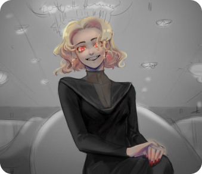
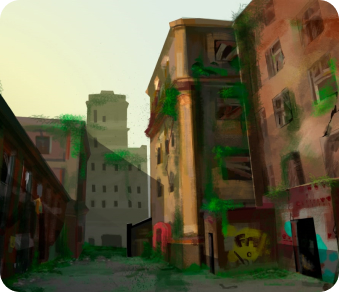
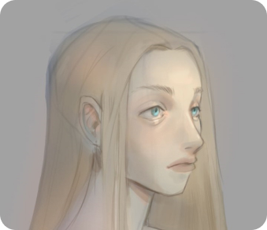
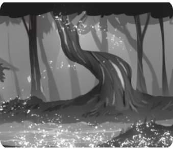

Данцанова Янжима
Художник-иллюстратор 3 года опыта работы
- концепты к играм
- иллюстрации к книгам
Примеры работ
- 
- 
- 
- 
О проектах
Цель: создать локацию для 2D-платформера
Сеттинг: фэнтезийный мир, вдохновленный азиатской культурой, особенно тибетской и японской. Общая атмосфера должна передавать эту культурную тематику, создавая уникальное окружение с влиянием архитектуры и атмосферы.
Отзывы клиентов
-
Ирина
«2D-иллюстрации к играм, созданные художником, просто захватывали дух. Внимание к деталям и яркие цвета оживили игровой мир, сделав его визуально захватывающим. Настоятельно рекомендуется!»
-
Андрей
«Работать с иллюстратором 2D-игр было очень приятно. Их способность понять наше видение и воплотить его в потрясающие произведения искусства превзошла наши ожидания. Иллюстрации не только передали суть нашей игры, но и добавили ей неповторимого очарования»
-
Наталья
«Работа иллюстратора 2D-игр сыграла важную роль в создании захватывающей атмосферы нашей игры. Иллюстрации продемонстрировали их талант в создании разнообразных и визуально привлекательных персонажей, пейзажей и объектов».
-
Максим
«Мы были очень впечатлены универсальностью и креативностью иллюстраторов 2D-игр. Они смогли создать широкий спектр художественных стилей, легко адаптируясь к потребностям нашей игры.